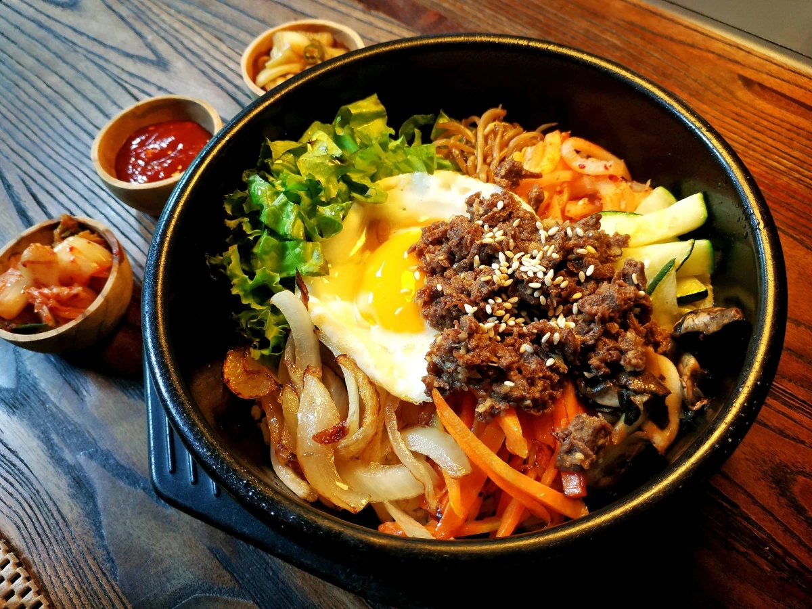

Ingredients
- Cooked rice
- Spinach
- Carrot
- Bean sprouts
- Egg (fried)
- Beef (or tofu for vegetarian version)
- Gochujang (Korean chili paste)
- Sesame oil
- Garlic
- Sesame seeds
Instructions
- Prepare rice and vegetables by sautéing each one separately in sesame oil.
- Cook the beef (or tofu) and slice thinly.
- Place rice in a bowl and top with cooked vegetables, meat, and a fried egg.
- Drizzle gochujang and sesame oil on top and garnish with sesame seeds.
- Mix everything together and serve hot.